當聖光與符咒成為審判之刃：從吸血鬼與殭屍敘事反思宗教權威、教條偏執與道德除錯
目錄
隨便點選下方其中一個主題便能直接跳到該主題的說明區- 前言：從哥德幻想的符號倒錯，到現實神權的系統除錯
- 一、十字架、聖光與天師道法：神聖的象徵，還是審判的工具？（七大作品深度剖析）
- 二、案例分析：為何基奴．李維和蓋瑞‧歐德曼主演的《吸血鬼：真愛不死》和休．傑克曼與理查．羅森堡主演的《凡赫辛》沒有放進標題一的例子中？
- 三、神之沈默：為何聖光在黑暗面前不發一語？
- 四、宗教史上的「正義」與「暴力」
- 五、從原始經典看暴力的法統——耶和華的「意志」與教會的「執行」
- 六、從「代碼抹除」到「反向除錯」：當審判無視行為，誰才是真正的怪物？
- 七、現實系統除錯：撇除虛構戲劇，現實驅魔在科學、病理與演化論上的全面死當
- 結語：從「神聖之光」到「理性之光」
- 延伸閱讀（皆為其他的GitHub Pages專案）
前言：從哥德幻想的符號倒錯，到現實神權的系統除錯
在無數的奇幻與哥德文學、電影與影視作品中，十字架、聖光、桃木劍與符咒常被塑造成驅除黑暗的絕對正義武器。然而，當我們深入拆解這些文本時，卻常看見令人不安的符號倒錯：握著十字架與法器的人往往殘暴偏執、帶刀行兇；而被烙上「妖魔」印記的吸血鬼與殭屍，卻在恪守底線、救人續命。
這種虛構敘事對宗教權威的顛覆，並非憑空捏造的藝術叛逆，而是人類思想對現實歷史與迷信體制的「反向審計」。
本文將以經典不死生物文本為切入點，層層剖開神聖外衣下的道德偏執；更進一步跳脫螢幕的虛構濾鏡，將整套宗教神學、舊約暴君神格與現實驅魔儀式，直接置於現代腦神經病理學、演化生物學、跨系統物理規律（Data Type 衝突）與法醫司法的解剖台下——徹底除錯這套壟斷道德數千年的迷信代碼。
我們希望藉由這場硬核的系統審計，強烈呼籲讀者撥開神聖話術的迷霧，切莫被任何以「神明、因果、中邪」為名裝神弄鬼的神棍與盲信體制所恐嚇與誤導。在面對生理病痛與人生困境時，唯有回歸科學實證與獨立思考，才是文明社會真正應當追尋的「理性之光」。
一、十字架、聖光與天師道法：神聖的象徵，還是審判的工具？（七大作品深度剖析）
基督教特別是天主教的神學體系中，十字架象徵著耶穌的犧牲與救贖，聖光則象徵著神的恩典與真理的照耀。然而，在以吸血鬼為題材的故事中，這些象徵不再是溫柔的指引，而是具有直接毀滅性的力量。
吸血鬼在許多故事中不一定是純粹的惡魔或邪靈，有時甚至是被詛咒的凡人、有苦衷的角色，甚至是帶有道德掙扎的存在。以下透過七部經典作品進行深入剖析：
（一）《Hellsing》（皇家國教騎士團）：安德森神父——將聖光異化為狂信暴力的「祈禱怪物」
在日漫《Hellsing》中，梵蒂岡第 13 課的亞歷山大·安德森（Alexander Anderson）神父，是將「聖光」化為極端暴力最鮮明的縮影。安德森平時是溫柔的孤兒院老師，但在宗教旗幟下，他卻是冷酷的「神之刺客」。對他而言，正義並非慈悲，而是徹底剷除所有不信奉其教條的異端。
這種狂信使得他無視個體的善惡。他不僅獵殺邪惡的吸血鬼，也毫不憐憫地殺害信仰不同派系的人類。這種「以神之名」的屠殺，在他眼中被視為一種神聖的淨化。更具諷刺意味的是，為了打敗對手，他不惜將聖物「海倫娜的聖釘」刺入心臟，將自己轉化為喪失人性、僅剩殺戮本能的植物怪物。
當他為了「守護神」而選擇捨棄人性的那一刻，他與他所憎恨的魔鬼已無二致。阿爾卡特對他的嘲諷點出了核心矛盾：「你不再是人，你只是一個祈禱的怪物。」這再次證明，當宗教象徵被用來正當化無止境的暴力時，所謂的聖潔只是一層掩蓋殘酷的虛假外衣，而真正的人性之光早已在狂信中熄滅。
（二）《暮光之城》（Twilight）：卡萊爾·庫倫——牧師父親的盲目獵殺 vs 恪守醫德的「魔鬼」
在系列電影《暮光之城》中，庫倫家族的領導者卡萊爾·庫倫（Peter Facinelli 飾演）出生於 17 世紀的倫敦。他的父親是一位極端狂熱的牧師，以「剷除邪惡」為名，發起針對吸血鬼、女巫與狼人的獵殺行動。然而，這位牧師因缺乏辨別能力，導致無數無辜的平民被冠上魔鬼之名而冤死。
卡萊爾在繼承父親的職位後，雖意外發現了真正的吸血鬼巢穴，卻在行動中被轉化為吸血鬼。他深知父親的殘酷與盲目，因此選擇躲在陰暗處獨自承受轉化的痛苦，甚至多次嘗試自殺以求清白。
諷刺的是，這位被宗教教條視為「永世不得救贖」的吸血鬼，最終卻憑藉強大的自律成為一名救人無數的醫生，並終身堅持不吸食人血的「素食者」原則。與他父親那種以神之名行暴力之實的偽善相比，卡萊爾作為「魔鬼」卻展現了更接近神性的慈悲。這再次讓我們反思：當宗教體制將特定身份定義為「邪惡」時，它是否也同時扼殺了那些最純潔的靈魂？
（三）《德古拉：永咒傳奇》（Dracula Untold）：犧牲靈魂拯救萬民，換來的卻是教條背刺
在美國電影《德古拉：永咒傳奇》中，德古拉（Luke Evans 飾演）原本是瓦拉幾亞的國王，為了保護自己的子民和使自己的王國免受土耳其大軍的侵害，他選擇通過與山洞裡的魔鬼做交易變成吸血鬼。
然而，當子民們發現自家的國王觸碰到陽光和銀製品會燒起來後開始排斥他，認為他走向與上帝背道而馳的邪路。於是他說出了以下的金句名言：
This is your loyalty, your gratitude? Fools! Do you think you are alive because you can fight? Come on! You are alive because of me! Because of what I did to save you!
也就是說，德古拉曾為國家和人民做出巨大犧牲，但為何他為了人民生存的決定最終卻被視為「惡」？這讓我們反思，是否當一個人反抗不公時，他就一定是「邪惡」？
（四）《尖叫旅社》（Hotel Transylvania）系列：凡赫辛的滅絕狂熱——發條機械下的冷血偏執
在索尼動畫電影《尖叫旅社》系列中，吸血鬼與人類獵魔人的善惡反差被推向了極致。在第一集中揭露了德古拉（Adam Sandler 配音）悲痛的創傷：十九世紀末（1895 年），深愛人類、愛好和平的妻子瑪莎（Martha）遭到手持火把的人類暴民殘忍燒死，迫使德古拉建造尖叫旅社庇護弱小的超自然族群，並沉痛指出「人類才是真正的怪物」。
而到了《尖叫旅社 3：怪獸假期》中，這種獵魔偽善更以亞伯拉罕·凡赫辛（Abraham Van Helsing）的偏執形象赤裸顯現：凡赫辛自詡正義代表，數十年如一日對德古拉展開瘋狂追殺；為了將所有怪獸趕盡殺絕，他甚至不惜將自己改裝成只剩頭顱與發條齒輪的半機械殘軀。
在最後的高潮決戰中，凡赫辛在郵輪上演奏「毀滅樂章」操控巨型海怪克拉肯，意圖將整船無辜度假、載歌載舞的善良怪獸全部撕碎屠戮。電影藉此狠狠諷刺了盲目的獵魔狂熱：那些只想過平靜生活的吸血鬼與怪獸保有人性與愛，而滿嘴以消滅黑暗為天職的凡赫辛，卻在無差別滅絕異族的偏執狂念中，早已將自己活成了真正冷血無情的恐怖怪物。
（五）《你好，吸血鬼先生》（Hello Mr. Vampire）：十四年未曾傷人，何以在主教眼中「永遠是野獸」？
在中國大陸的網絡大電影《你好，吸血鬼先生》中，洛塔公爵和他的妻子都是吸血鬼，但他們從不傷害人類。後來，一群虔誠的教士和主教組織了一場獵殺行動，試圖處決這對夫婦。
洛塔公爵成功逃走並流浪到中國，而他的妻子則不幸喪命。逃到中國後，洛塔與晚清公主方墨（也就是女主角）相戀，但他從不上教堂，這讓當時也跟著來中國傳教的白人感到奇怪。
當這些傳教士得知洛塔是吸血鬼後，他們決定使用十字架、聖光法陣和銀製武器對付他。洛塔很生氣地說：「這十四年來，我從未傷害過任何人！不要逼我！」
為首的主教卻說：「以主的名義，你開設醫院收集鮮血。難道你就不怕主的懲罰嗎？野獸，永遠是野獸！」當方墨請求他們放過洛塔時，主教卻憤怒地對她說：「公主，你已經被這個魔鬼給蠱惑了！我在挽救你！」
這不僅揭示了教會對「異類」的極端排斥，也讓我們思考，魔鬼與「善」的界限究竟在哪裡？洛塔公爵並不想傷害人類，他的行為是否真的該被視為邪惡？
（六）《惡魔城》（Castlevania）：麗莎被當作女巫焚死——神職人員帶刀行兇與空盒子聖殿
在 Netflix 動畫《惡魔城》中，德古拉是一位舉止優雅、博學多聞、精通科學的學霸吸血鬼，且從不吸食人血。當身為人類的麗莎特地來到他的城堡向他請教科學知識時，他不僅傾囊相授，兩人更結為夫妻。德古拉也因此間接幫助人類改善生活，人品高尚。
麗莎利用所學開設診所救治窮苦百姓，深得病人感激。在忙碌中，她曾對著吊墜裡丈夫的畫像低語：「你正在遠方旅行，我每天都恨你不在這裡。但我愛你給了我能幫助人們的知識！（I hate that you are not here, every day. But I love that you gave me the knowledge to help people!）」
然而，在當時的神權壓迫下，懂太多科學竟被視為女巫。麗莎在診所救人時被教會強行抓走，並綁上火刑柱燒死。她死前仍展現大愛，要求德古拉寬恕這些無知的人。德古拉憤怒地告知人類有一年時間搬離，否則將召喚惡魔大軍。該死的是，人類不但沒把警告當一回事，一年後竟還在原地慶祝宗教節日，導致德古拉最終帶著大軍發動了屠殺。
更諷刺的是，教會甚至洗腦群眾，詆毀救世的神諭團與貝爾蒙特家族。直到特雷弗（Trevor Belmont）當眾揭穿教士們的惡行：
"You had no problem beating an old man this morning! You had no problem lying to these people about the Speakers! I wonder if the people of the great city of Gresit have ever seen a priest draw a knife before! It was your bishop who brought all this down on us! Your bishop who started it all by killing a defenseless woman!"
（你們早上毆打老人、對群眾撒謊時毫無顧忌！我倒想看看這座城市的居民，以前有沒有見過神父拔刀企圖行兇！是你們的主教殺害了一個手無寸鐵的女人，才開啟了這場地獄！）
當眾人看見本該慈悲的神職人員竟然帶刀行兇，偽善的面具徹底破碎。而教堂內惡魔對葛雷希特主教的審判更是震聾發聵：
"God is not here. This is an empty box. Your life's work makes Him puke. Lies in your house of God? No wonder He has abandoned you. ...Your God knows that we wouldn't be here without you."
（上帝不在這裡，這只是一個空盒子。你一生的事業令祂作嘔。在上帝的殿堂裡撒謊？難怪祂早已拋棄了你。……你們的神知道，沒有你所做的一切，我們根本不會出現在這裡。）
這告訴我們，當宗教權威無視良知，僅以教條甚至暴力審判他人時，所謂的「聖地」早已空無一物。德古拉的復仇雖然極端，但也是對這種深重偽善的慘烈反擊。
下方依序收錄了《惡魔城》第一季最核心的關鍵場景：從「麗莎以科學救治病患並感念德古拉」、「教會粗暴闖入將醫術誣指為巫術」，到「特雷弗當街揭穿神父帶刀行兇」，以及惡魔對主教發出「上帝不在這裡，這只是個空盒子」的終極審判。五部影片構成了一套無懈可擊的證據鏈，赤裸揭發制度性宗教如何一步步將自己活成真正的惡魔：
▶ 實證片段一：德古拉與麗莎的相遇與悲劇溯源（官方剪輯與劇情總覽）
說明：呈現德古拉與麗莎因追求科學真理而結緣的過往，為後續教會的野蠻迫害與整場人類滅頂之災埋下最初的火種。
▶ 實證片段二：醫者仁心與深情寄託——麗莎診所救人並感謝德古拉傳授科學
說明：片段記錄了麗莎運用現代醫學悉心醫治窮苦老婦人，並在忙碌中深情撫摸裝有德古拉畫像的吊墜，低語感謝丈夫傳授自己救人知識的溫馨畫面。這證明了吸血鬼的知識被用於行善救命，而非危害人間。
▶ 實證片段三：科學被冠以巫術之名——麗莎診所遭突襲與火刑受難（社群精華解說）
說明：此片段為社群平台深度解說短影音，精準濃縮了教會狂熱分子闖入診所將現代醫術誣指為巫術、並強行將麗莎綁上火刑架焚燒的殘酷畫面。影片藉由旁白拆解，直觀呈現了神權體制對科學真理與文明啟蒙的原始恐懼。
▶ 實證片段四：偽善面具破裂——特雷弗當街揭穿「神父拔刀行兇」
說明：特雷弗·貝爾蒙特當著全城民眾的面，厲聲痛斥教士毆打長者、構陷神諭團，並當場逼迫神父拔出暗藏的短刀，讓市民親眼目睹口口聲聲代表上帝的神職人員本質就是持刀暴徒。
▶ 實證片段五：空盒子聖殿——惡魔對葛雷希特主教的終極誅心審判
說明：主教躲在教堂內妄想聖堂能庇護自己，惡魔卻冷酷宣告「上帝早已拋棄了你，這裡只是個空盒子」。這段對白將全劇對盲目信仰與宗教腐敗的批判推向了哲學天花板。
（七）《殭屍道長》（Vampire Expert）：毛小方被囚地窖——神父的道貌岸然與告魯斯的絕望咆哮
在港劇《殭屍道長》中，毛小方（林正英 飾演）、鍾邦（王書麟 飾演；此角色在劇中為毛小方的徒弟）等人被告魯斯伯爵（李道洪 飾演）轉化成他的同類後，雖然內心依舊善良，仍保有人性與理智，卻被教堂的神父（蕭鍵鏗 飾演）以「聖潔」之名囚禁於教堂地窖。十字架與聖光在此不再是救贖的象徵，而是封鎖逃生路徑、造成魔法傷害的「刑具」，使得不少感染者淒慘死去（毛小方與鍾邦作為故事主角當然有存活下來，但過程一樣很痛苦）。
這種設定令人深思：當一個人因「身份」而非「行為」被定義為邪惡時，審判是否公正？神父一邊將仍有良知的生命活活餓死，一邊像什麼事都沒發生地對信徒宣揚「神的愛」，這種極致的偽善正是對宗教信仰最深重的諷刺。當盲目的教條無視個體的痛苦，宗教便從指引靈魂的明燈墮落為壓迫的工具，與中世紀獵巫運動中冤死無辜者的行為如出一轍。
另一方面，告魯斯伯爵的黑化源於絕望的背叛。他生前曾是虔誠善良的信徒，卻在戰爭中失去封地與心愛的未婚妻莎蓮（麥景婷 飾演）。他在絕望中憂鬱而死後成為吸血鬼，並對這份沉默的信仰發起挑戰。他掐死偽善的神父後，指著耶穌像憤怒咆哮：
「我之所以變成這樣，完全是你一手造成的。你容忍那群人搶走我的財富、搶走我的愛人！我曾經無數次向你祈禱，祈求你把莎蓮還我。只要你讓我們在一起，我甚麼都能答應你，但你從來沒聽過我說的話，一次都沒有！你這麼麻木不仁，根本不配叫做神！……我發誓要消滅你創造的世界、消滅你創造的人類，我還要消滅你！神，你到底在哪兒？你出來見我！出來見我！」
感染者的死亡與告魯斯的黑化，讓我們看到宗教信仰若缺乏對現實痛苦的慈悲，反而會成為仇恨的根源。告魯斯的悲劇在於，他的信仰無法拯救他在最黑暗時期的崩潰，反而讓他陷入更深的復仇深淵。這段故事與《惡魔城》的哲學思考交相輝映：真正神聖的並非建築或法陣，而是對人性的理解與救贖。
這樣的角色設定與聖光的「一刀切」式審判產生衝突。如果聖光來自全知全能且慈愛的神，為何不能區分吸血鬼中的善與惡？為何那些仍保有人性與悔意的角色也會在聖光下燃燒？
（八）《殭屍道長》（Vampire Expert）：殭屍王玄魁的悲壯殉道——滅門血仇下的不吸血自律，自爆投影粉碎天師的道德偏執
若以為「以正義之名行排他之實」僅存在於西方基督教體系，那麼港劇《殭屍道長》中對東方茅山道術法統的深刻反思，則徹底打破了這層文化邊界。劇中清朝皇族殭屍王玄魁（冼灝英 飾演）的生平與終局，將「身分原罪 vs 道德實踐」的衝突推向了華語影視前所未有的哲學高度。
1. 滅門悲劇與百年自律：
玄魁生前貴為清朝皇冑王爺，當年因外敵強勢入侵，他親眼目睹自己最摯愛的小兒子在自己眼前慘遭殘忍屠殺，自己亦在國破家亡的絕望中殉難。死後滔天的悲憤與怨氣聚而不散，使他化身為擁有御風浮空飛行、靈魂記憶傳輸超常神力的百年屍王。然而，最令人動容的道德奇蹟在於：身負這般滔天滅門之恨與至高魔力，玄魁死後百年竟從未吸食過任何一口無辜人血，其心智與靈魂始終保持著極高的貴族尊嚴與道德底線。
2. 防空洞的慈父輸血與師徒裂痕：
當徐小尊一家在防空洞慘遭日本侵華惡靈屠殺、小尊命懸一線時，玄魁赫然發現小尊與自己生前慘死的兒子長得一模一樣。出於超越生死藩籬的深沉父愛，玄魁毅然斷甲輸血，將自身皇族精血餵入小尊體內強行為其續命。這場屍變本質上是一次偉大的慈父救贖，但一代宗師毛小方（林正英 飾演）卻陷入了宛如《尖叫旅社》凡赫辛式的狂熱偏執——死抱著「人鬼殊途、殭屍皆妖」的陳腐門規，對重情重義的玄魁窮追不捨，甚至逼迫小尊、冷酷認定其終成禍害。
這直接引發了深明公理的徒弟鍾邦（王書麟 飾演）挺身反抗師門，質問毛小方：一個從不害人、捨命護童的殭屍，難道只因「殭屍」的身分就該被形神俱滅？反而滿口仁義道德的活人比惡鬼還毒辣，修道若不辨善惡，道法何用？
3. 自爆肉身顯化幻影：終極的殉道與教條崩塌：
全劇最高潮且最震撼的諷刺在於終局：滿口天理公義的野心家楊飛雲（徐少強 飾演）才是真正殘暴不仁的幕後真兇，他不斷陷害玄魁、欺瞞世人。在全城修士與毛小方的誤解包圍下，玄魁面對背叛與絕境，竟選擇了自爆肉身！他以自我毀滅為代價，將自身的龐大記憶化作漫天光幕幻影，向在場所有人如實重現了楊飛雲的陰險罪行與徐小尊慘死的真相。
直到漫天幻影消散、玄魁魂飛魄散的那一刻，毛小方才如五雷轟頂般徹底醒悟：原來自己一直奉為金科玉律的道統教條蒙蔽了雙眼，自己一直在冤枉這個至情至聖的殭屍王，更一直在狠狠斥責那個試圖告知自己真相的愛徒鍾邦！
這場悲壯的自爆，完成了對傳統道統正義最凌厲的解構：握著桃木劍、自詡天道化身的正道天師，淪為了盲信偏見的劊子手；而被世人視為極陰極邪的不死妖魔，卻用粉身碎骨的自爆照亮了人間的真相與良知。真正的正義與魔道，從來不在於肉身的活死與符號的表象，而在於靈魂最深處的選擇。
細心的讀者或許會發現，上述八個案例在排序上並非隨機排列，而是遵循了「大眾認知引導 ➔ 跨文化視角過渡 ➔ 終極哲學升華（中西對照）」的嚴謹敘事節奏：
- 前段（主流大眾 IP 建立共鳴）：優先以《Hellsing》、《暮光之城》、《德古拉：永咒傳奇》與《尖叫旅社》等全球知名作品開篇，利用讀者耳熟能詳的流行符號快速建立邏輯信任，揭露獵魔人與神職體系「以神之名行暴」的異化本質。
- 中段（跨文化視角的緩衝跳板）：以小眾網絡大電影《你好，吸血鬼先生》作為承上啟下的過渡。雖然該片知名度不及好萊塢院線大片，但其「歐洲吸血鬼流浪至晚清中國」的獨特設定，精準呈現了西方傳教士將「非我族類即野獸」的偏執教條強加於東亞社會的荒謬，成為從純西方基督教神學切換至東方本土語境的最佳文化橋樑。
- 後段（經典動畫與終極哲學壓軸・港產回憶的中西法統破除）：
- 在《惡魔城》以「空盒子聖地」與「上帝不在這裡」揭穿制度性宗教的殘酷偽善後，壓軸登場的是九零年代經典港劇《殭屍道長》的雙重批判。這部作品承載著無數資深港產影視迷的童年情懷與黃金記憶，但考量到對多數當代年輕讀者而言，這部長篇港劇在受眾上相對小眾且年代稍遠，因此特意將其置於文末壓軸，讓已建立邏輯架構的讀者能沉澱細品其深邃哲學：
- 西方信仰幻滅（案例七・告魯斯伯爵）：赤裸揭發神職人員將同類囚殺於地窖的道貌岸然，以及告魯斯指著耶穌像發出「神在哪裡？你出來見我！」的絕望咆哮，將對「神之沉默」的控訴推向極致；
- 東方道統破執（案例八・殭屍王玄魁）：更進一步跳脫西方基督教框架，以清朝皇冑殭屍王玄魁「百年不吸人血」的高潔操守、防空洞斷甲輸血救小尊的深沉父愛，對比天師毛小方宛如凡赫辛般的盲信偏執。最終玄魁以粉身碎骨的自爆記憶投影昭雪真相，不僅徹底洗刷了鍾邦的冤屈，更當頭棒喝震醒了自詡正義的天師——證明「以正義標籤行盲目抹除」是超越東西方一切宗教與法統的普遍人性偏見。
二、案例分析：為何基奴．李維和蓋瑞‧歐德曼主演的《吸血鬼：真愛不死》和休．傑克曼與理查．羅森堡主演的《凡赫辛》沒有放進標題一的例子中？
在探討上帝與教會系統的漏洞時，我們必須區分吸血鬼的「轉化動機」。這也是為何本網頁在標題一的邏輯論證中，捨棄了主流名作而選擇特定作品的原因：
- 排除《吸血鬼：真愛不死》的原因：該作敘事重心高度偏向浪漫情愛，對於德古拉（Gary Oldman 飾演）如何從虔誠信徒「黑化」的邏輯鏈僅在片頭的前幾分鏡快速跳過，缺乏對信仰體系崩潰的深度數據。
- 排除《凡赫辛》的原因：這部作品中的德古拉（Richard Roxburgh 飾演）屬於傳統的「權力慾望型」反派。他為了追求力量與永生，自願與惡魔簽訂契約背叛上帝。這種「主動求惡」的角色符合二元對立的宗教教條，無法提供「系統性遺棄」或「信仰受害者」的反向除錯數據。
「神在哪裡？當我的家人被殺害、當我陷入絕望的深淵，那位號稱全知的神在哪裡？」
這段「第一人稱」的控訴，精確記錄了一個靈魂被「神之沈默」徹底碾碎的過程。與《凡赫辛》中那個單純追求力量的惡魔相比，告魯斯的反抗源於一種更深層的幻滅：他曾全身心投入那套十字架系統，但系統卻在他最需要維護時當機。
因此，我們選擇《殭屍道長》作為核心案例，旨在揭示：真正的邪惡，往往源於一個宣稱慈悲的系統在面對現實災難時的絕對沈默與不作為。
三、神之沈默：為何聖光在黑暗面前不發一語？
如果神真的愛世人，祂會希望地球上的人們因為宗教而搞得四分五裂嗎？從影視作品到現實邏輯，我們看到的往往是神性的「缺席」與沈默：
- 《殭屍道長》裡的告魯斯伯爵：曾是虔誠信徒，卻在一場戰爭中失去愛人與財富。他無數次向耶穌像祈禱，神卻無動於衷，這種冷漠最終將善良的靈魂推向復仇的深淵。
- 《Castlevania》裡的Lisa Tepes：當她被教會誣指為女巫並綁上火刑架時，那位「全知全能」的神並未現身告知教士們正在犯下暴行。
- 《暮光之城》、《Hellsing》、《Hotel Transylvania》：無論是卡萊爾那冤枉好人的父親、極端暴力的安德森神父、放火燒死瑪莎的人類，還是對德古拉趕盡殺絕的凡赫辛，他們以「神愛世人」為名行惡時，神始終睜一隻眼閉一隻眼。
- 《殭屍道長》裡的殭屍王玄魁：不僅西方上帝在信徒受難時沈默，東方天道與茅山門規在面對真偽時亦往往被偏見蒙蔽。玄魁恪守底線、百年不吸人血，卻長久背負「妖魔」罵名遭正道追剿；若非他最後粉身碎骨自爆記憶，所謂代表天道的天師甚至至死都無法看清誰才是真正的善與惡。
這種「神之沈默」在虛構作品中固然是激發戲劇張力與角色黑化的催化劑，但在真實世界中，它卻是橫亙在人類理性面前最古老、也最殘酷的哲學死穴——「苦難問題（Problem of Evil）」。
每當現實中爆發席捲全球的瘟疫大流行、屠殺平民的慘烈戰火，或是體制內對弱小者的殘忍戕害時，那位被信徒奉為「全知、全能、全善」的造物主，在現實中展現的反應與影視作品如出一轍：長年保持絕對的離線與失聯。 信徒往往將這種殘酷的缺席美化為「神的奧祕與考驗」；然而，一旦我們撥開這種自我安慰的心理防衛機制，將神聖話術置於嚴密的邏輯與現實審計下，整套神義論便會徹底暴露其不可調和的底層矛盾。
下方兩幅流傳甚廣的諷刺插畫，以及知名知識型創作者「蒟蒻講幹話」的犀利除錯影片，便精確戳中了這套神聖代碼在面對「戰爭、祈禱、自由意志與體制犯罪」時的致命死穴：
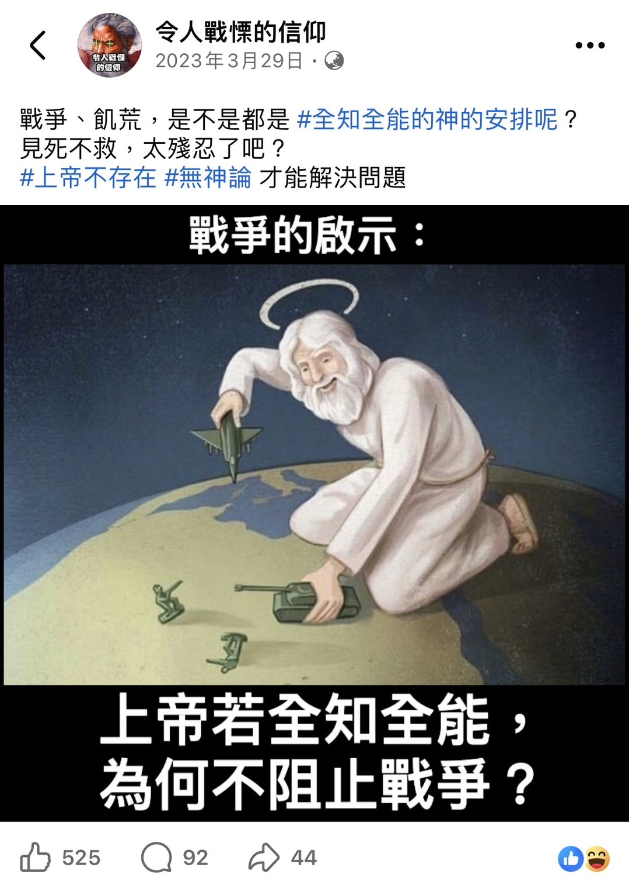
▲ 圖像審計：伊壁鳩魯悖論的當代顯化
若上帝真如神學宣稱的「全知、全能、全善」，那麼祂面對人間的戰火屠殺與飢荒哀號卻始終作壁上觀，便在邏輯上直接導向死穴：要麼祂「想阻止卻無能為力（非全能）」，要麼祂「有能力阻止卻冷眼旁觀（非全善）」。這張諷刺插畫精準戳破了信徒在災難面前強行以「神深不可測的安排」為其卸責的心理防衛機制。
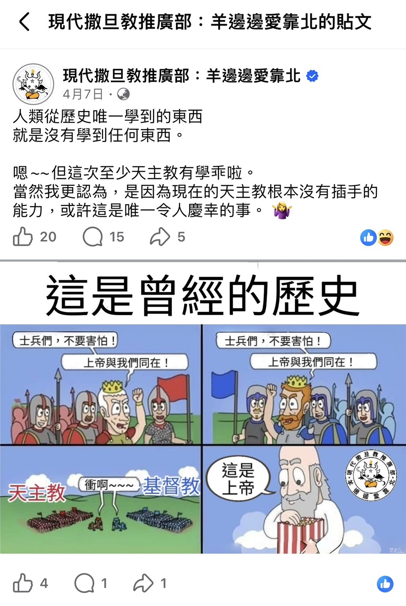
▲ 圖像審計：同源信仰的屠殺與荒謬神威
歷史上天主教與基督新教軍隊在三十年戰爭中互相屠殺，雙方將士皆高呼「上帝與我們同在！」。漫畫以極端荒誕的筆觸揭露了殘酷真相：如果雙方侍奉的是同一個神，那這尊神無異於坐在雲端吃著爆米花觀賞凡人自相殘殺的嗜血看客。信徒自以為在為信仰獻身，本質上只是權力政客與宗教狂熱的犧牲品。
下方四部精選影片皆出自以風格幽默、邏輯犀利著稱的知名知識型創作者「蒟蒻講幹話」。影片從日常生活的統計盲區切入，層層剖析一神信仰的內在自相矛盾、體制性掩蓋性侵罪行，以及「全能上帝 vs 自由意志」的邏輯死穴：
▶ 實證片段一：禱告到底有沒有用？——倖存者偏差與心理安慰劑效應
說明：蒟蒻以通俗生動的語言拆解「禱告」的真實運作機制——當事情順利時信徒將其歸功於神蹟應驗，失敗時則以「神的試煉」自我安慰。這種永遠立於不敗之地的封閉邏輯，在統計學與客觀機率面前完全是不攻自破的心理投射。
▶ 實證片段二：天主教與基督教的區別在哪？——十字架刑具本質與神父性侵包庇黑幕
說明：深入梳理天主教與基督教新教的教條演變與符號差異，揭示十字架在歷史上作為羅馬殘酷死刑具的血腥物質真相；同時直球揭露教廷內部神職人員長期性侵男童、高層透過體制官僚全盤包庇以逃避世俗法律制裁的制度性腐敗。
▶ 實證片段三：為何我是無神論者？——浩劫與苦難降臨時，那位全能的神究竟在哪裡？
說明：從個人思辨出發直球對決「苦難問題（Problem of Evil）」。當歷史上的大屠殺、瘟疫天災與無辜弱小的哀嚎發生時，宣稱慈愛全能的神明永遠長年處於絕對的斷線狀態。既然神在人類最需要祂的時候從未現身，將生命寄託於虛無神祇便毫無實質意義。
▶ 實證片段四：如何用「自由意志」打臉上帝？——全知命定與罪責歸屬的終極死結
說明：用純邏輯論證拆穿神學的狡辯：如果上帝真的「全知全能」，意味著祂在造人之前就早已知曉每個人未來的每一個罪惡選擇；若一切早已被神預知並編寫，人類便根本沒有真正的「自由意志」，罪惡的終極責任完全在造物主身上。用其自身的教條代碼，直接宣告上帝審判的法統死當。
四、宗教史上的「正義」與「暴力」
若將目光從虛構作品移向歷史，我們會發現聖光與十字架作為壓迫工具的現實版本──宗教迫害、異端審判與獵巫行動。
虛構作品之所以敢於呈現這些陰暗面，是因為現實歷史遠比戲劇殘酷。十字軍東征、獵巫行動、異端審判，造成無數無辜者在「聖光」的名義下被犧牲。
13 世紀的英國哲學家與科學先驅 Roger Bacon（羅傑·培根），僅僅因為主張「真理不應盲從權威與教條，科學應該建立在觀察與實驗的基礎上」，便被方濟各會與教會高層以涉嫌巫術與「忤逆上帝的奇異思想」為由，遭軟禁與監禁長達十餘年。當封建教權感受到理性思考的威脅時，他們選擇的從不是神愛世人，而是動用宗教裁判所的極權暴力碾碎真理的萌芽。
本影片節錄自知名思想文化頻道「天狗衛視」的深度剖析，完整還原了歐洲中世紀教會如何壟斷知識解釋權、殘酷打壓早期科學探索，以及現代科學方法論如何在漫長的血淚衝突中與宗教教條徹底決裂、正式分家的歷史真相。
💡 本站作者後製註解：影片長達兩分多鐘，由作者親自使用 InShot 精確加註雙語／英文字幕，並配搭作者本人鋼琴實錄獨奏之改編作品《光的戰役》作為背景配樂，藉由昂揚且深沉的鋼琴旋律，向在至暗神權長夜中點燃理性火種的先驅者致敬。
中世紀以來，天主教會不僅壟斷精神世界的話語權，更將異端視為可怕的威脅。在宗教裁判所的審判中，「異端」、「女巫」、「惡魔的僕人」成為方便的指控手段，數十萬人遭到迫害、拷問，甚至被燒死，而這一切都披著「神的正義」的外衣。
這與吸血鬼在虛構故事中面對的處境何其相似？他們未必行惡，卻因其「身份」而成為審判與屠殺的對象。不是因為他們做了什麼，而是因為他們是什麼。這種「存在即原罪」的邏輯，正是歷史上最危險的道德武器。
為了更直觀地還原這套「神聖權力如何異化為實體暴力」的歷史真相，下方依序收錄了教會制度性罪責的圖像審計、將十字架物化為粉碎機的罕見歷史刑具，以及五段深入剖析「獵巫運動利益鏈」、「十字軍東征謊言」與「實證科學 vs 祈禱神話」的關鍵影像資料，逐層揭開神聖修辭背後的殘酷現實：
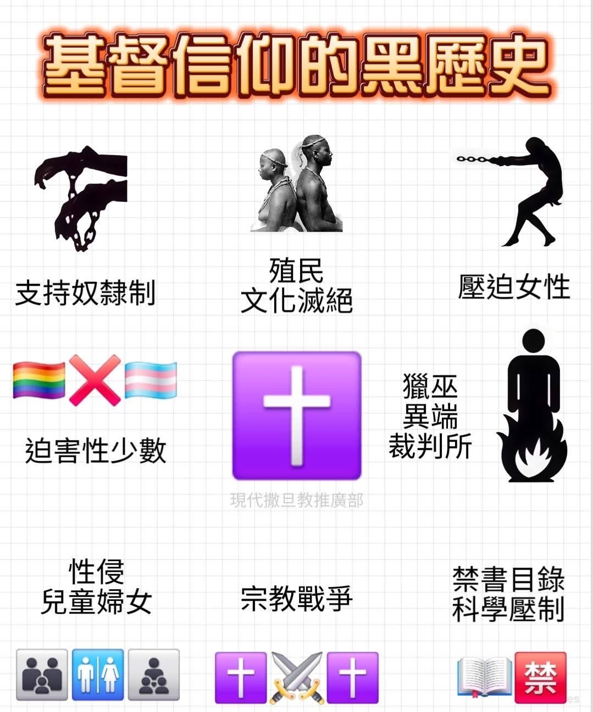
▲ 圖像審計：聖光符號下的制度性罪責清單
九宮格直觀列舉了教會自中世紀至近代難以抹滅的歷史污點：從為跨大西洋黑奴貿易與美洲原住民文化滅絕背書，到以獵巫之名焚殺數萬名無辜女性、以禁書目錄絞殺哥白尼與伽利略等科學萌芽，乃至當代梵蒂岡包庇數萬起神職人員性侵兒童醜聞。這份確鑿的歷史清單證明：當權力不受制約時，宗教符號就是史上殺傷力最大的包裝外衣。
⚖️ 視覺化的審判：十字架下的粉碎（宗教刑具的實體異化）
在歐洲中世紀與文藝復興的歷史陰影中，神聖符號常被制度化權力異化為物理施暴的遮羞布。如下方歷史文獻記錄之實體模型所示：這台相傳由 15 世紀教士構思打造的殘酷機械，直接將「十字架」設計為施力旋鈕與下壓控制桿，專門用來絞碎、夾斷被教會判定為「異端」的科學家、解剖學者、畫家與雕塑家的雙手與十指。
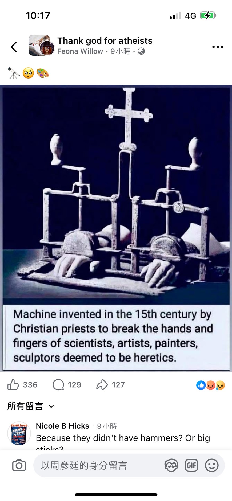
▲ 歷史實物考據：以神聖十字為槓桿、專門摧毀理性創造力（雙手）的夾手刑具
這種機械結構精確揭露了神權體制最深層的恐懼——他們不僅要用教條箝制人類的思想，更急於在物理維度摧毀「驗證真理與創造美」的硬體工具（雙手）。當象徵贖罪與犧牲的十字架被實體改造為肢解人體的粉碎機，所謂的「神聖正義」便徹底淪為統治階級維護蒙昧特權的冷血道具。這正解釋了為何在《惡魔城》葛雷希特主教的空殿、抑或《殭屍道長》地窖囚殺同類的修羅場中，那些高舉十字架帶刀行兇的人，本質上都是在執行同一個「以神之名行暴」的歷史惡意代碼。
歷史上的宗教暴力從非個案，而是龐大體制與心理狂熱共同驅動的產物。下方五部影片從「獵巫運動的集體癲狂」、「十字軍東征的聖戰謊言」，一路延伸至「宗教究竟對世界有何不可替代之貢獻」的硬核除錯：
▶ 實證片段一：獵巫狂潮的起源——宗教裁判所如何將恐懼制度化
說明：詳述歐洲中世紀獵巫運動的爆發背景。教會與世俗法庭如何透過《女巫之槌》將天災、疾病與女性獨立意識妖魔化，藉由嚴刑拷打屈打成招，將數萬無辜者推上火刑柱。
▶ 實證片段二：獵巫運動的利益鏈條——財產沒收與鄰里告密的道德崩潰
說明：揭開獵巫運動背後骯髒的經濟利益。一旦被扣上女巫或異端罪名，受害者的土地與財產便會被領主、法官與教會瓜分，使「獵魔」徹底淪為掠奪財富與剷除異己的政治工具。
▶ 實證片段三：十字軍東征的動員黑幕——「砍死異教徒就能上天堂」的殺人免死金牌
說明：記錄教宗烏爾巴諾二世如何以「免除一切罪孽、死後直升天堂」的宗教狂熱口號號召東征。成千上萬的狂熱騎士在聖殿旗幟下展開血洗耶路撒冷的屠城暴行，證明宗教如何將純粹的暴力合法化。
▶ 實證片段四：聖戰幻滅與洗劫同盟——連基督徒兄弟都難逃毒手的第四次東征
說明：深入剖析第四次十字軍東征如何完全撕破宗教面具。所謂的聖戰軍隊甚至沒有前往聖地，反而為了金錢洗劫同為基督徒的君士坦丁堡，將宗教狂熱下的利益分贓本質暴露無遺。
▶ 實證片段五：宗教到底對世界有何實質貢獻？——實證科學 vs 祈禱神話（蒟蒻講幹話）
說明：知名創作者「蒟蒻講幹話」以極其辛辣嚴密的邏輯審查「宗教的真實價值」。蒟蒻在片中一針見血指出：檢驗標準必須是「只有宗教組織才能做到、世俗組織完全辦不到的事」（因此慈善捐款、施粥根本不能算作宗教專利）。他更犀利強調：現代能拯救無數生命的醫學藥品配方，是無數科學家與醫學人員在實驗室沒日沒夜反覆試驗、甚至犧牲健康換來的結晶，從未有過信徒靠對著空氣祈禱就能讓藥品分子式自動顯現在白紙上的神蹟。
五、從原始經典看暴力的法統——耶和華的「意志」與教會的「執行」
從數據一致性來看，中世紀教會的殘暴行為並非「誤解」了神意，而是在貫徹耶和華原始代碼中的排他性與暴力基因。信徒口中的「愛」更像是一個強行覆蓋在殘暴底層上的 Patch，試圖修補那個註定會產生邏輯衝突（Conflict）的信仰系統。
一旦跳過現代講台上的二次包裝與美化濾鏡，直接翻開古希伯來原典進行底層的「文本與邏輯審計」，這套神權體系在人道主義與善惡二元論面前的道德法統便會徹底崩解：
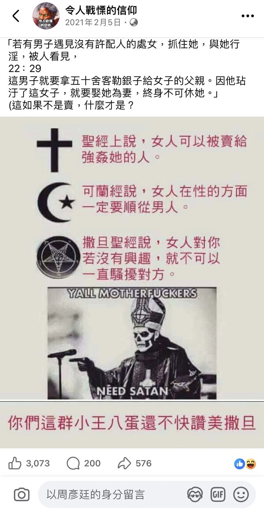
▲ 文本審計：《申命記》22:28-29 的道德死當
原始猶太律法明文規定：若男子強暴未許配之處女，僅需賠償女方父親五十舍客勒銀子即可強娶受害者為妻[cite: 17]。這段原始法典赤裸暴露出鐵器時代游牧部落將女性徹底視為父親私有財產的野蠻本質。相較於現代人道主義與世俗人權法規，原始神聖經典中的倫理觀念在文明社會面前早已全面破產。
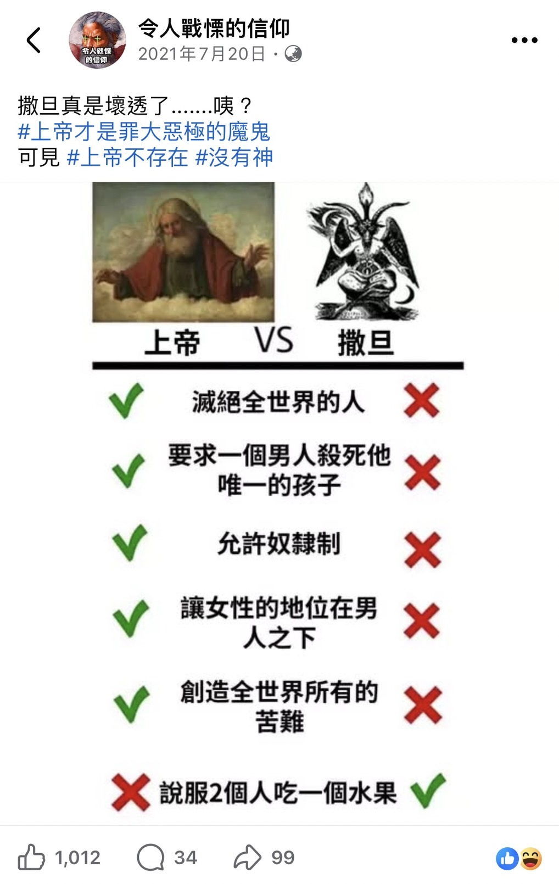
▲ 邏輯除錯：文本記錄中的殺人數據清算
嚴格回歸《聖經》文本統計：耶和華直接或間接降下神罰（大洪水滅世、毀滅所多瑪、埃及長子之災、亞述軍營夜襲）屠戮的人類數量高達數百萬；而整本經典中由撒旦親自奪去性命的人數卻屈指可數（甚至伊甸園裡蛇僅僅是說服人類吃下辨識善惡之樹的果實）。這張對比表徹底粉碎了「神代表絕對純善、魔鬼代表純粹惡意」的二元迷思[cite: 18]。
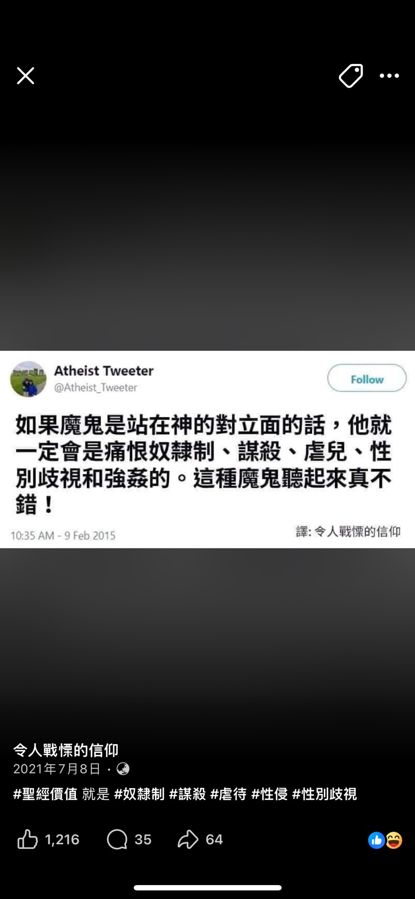
▲ 哲學反諷：反抗暴君的「道德反殺」
推文以極具思辨力度的逆向邏輯提出質問：如果神明在歷史文本中充斥著奴隸制認可、性別階級壓迫與大規模清洗，那麼站在這位暴君對立面的「魔鬼」，豈不是理所當然成為了反抗奴役、追求平等與捍衛弱者的覺醒先驅？[cite: 19] 這段辛辣的諷刺直指一神教善惡定義的根本邏輯漏洞。
下方兩部影片同樣出自知名創作者「蒟蒻講幹話」。蒟蒻以幽默辛辣且一針見血的吐槽風格，直接翻開信徒往往不敢直面的舊約聖經文本，揭發上帝在原始神話中的殘暴本質與毀滅性神罰在物理現實下的巨大破綻：
▶ 實證片段一：基督徒需要知道的英文——舊約上帝被美化遮掩的暴力行徑（蒟蒻講幹話）
說明：蒟蒻藉由解析聖經相關英語單字與典故，直球揭露《舊約》文本中耶和華動輒屠城滅族、下令殺戮嬰孩、降下殘酷瘟疫等令人髮指的部族戰神行徑。影片犀利戳破信徒只挑「神愛世人」講、刻意過濾並美化舊約嗜血暴行的認知偏差。
▶ 實證片段二：諾亞方舟怎麼這麼「科學」？——用常理與物理定律拆解滅世神話（蒟蒻講幹話）
說明：以極致反諷的手法剖析「大洪水滅世」神話。蒟蒻從船舶工程、淡海水鹽度失衡、百萬物種飼養排泄、食肉動物生態鏈斷裂等科學維度，徹底證明諾亞方舟在現實物理世界根本不可能成立；更再次點出耶和華僅因個人喜怒便殘酷溺斃全地球無辜生靈的滅世暴行。
六、從「代碼抹除」到「反向除錯」：當審判無視行為，誰才是真正的怪物？
從傳統神學邏輯來看，「救贖」本該是上帝提供恩典、個體依憑自由意志選擇悔改與向善。然而在流行影視與歷史現實中，聖光與法咒所展現的，往往是一場「拒絕辨識善惡、直接執行格式化的無差別物理抹除」：
-
「存在即原罪」的極權邏輯：
當聖光成為一種「只要判定為吸血鬼就必須自燃」的自動化執行程序時，它便徹底喪失了神聖性，淪為排除異類、維護既得權力的極權武器。 -
被剝奪的自由意志與「型別抹殺（Data Type Override）」：
不論是恪守醫德救人的卡萊爾、十四年未曾傷人的洛塔公爵、傳授科學知識的麗莎，抑或即便淪為屍王仍堅守不害人底線、斷甲輸血救孤的玄魁，乃至身不由己被轉化的毛小方與鍾邦——即便他們在行為（Code Behavior）上極盡善行，依然會被教會的聖器或道門的桃木劍無差別抹殺。這證明在僵化的宗教與法統系統中，最重要的從來不是你的道德實踐，而是你的身份標籤（Data Type）。
現代作品之所以不斷顛覆宗教象徵，本質上是在對現實中的宗教權力進行深度的「反向除錯」——那些口含天憲、以神聖正義之名濫殺無辜的體制代表（如《Hellsing》的安德森神父、《暮光之城》卡萊爾的牧師父親、《惡魔城》的葛雷希特主教、《尖叫旅社》機械化的凡赫辛，以及《殭屍道長》地窖囚殺同類的神父），與那些自始至終恪守底線、捨命救人的「魔鬼」相比，究竟誰才更符合「怪物」的定義？
虛構作品敢於在銀幕上解構神聖，是因為真實歷史早已給出了血淋淋的答案。從歐洲長達數個世紀的獵巫獵殺、基督與伊斯蘭的殘酷聖戰，到染滿鮮血的十字軍東征，人類歷史一再印證：當宗教體制將特定身份定義為「絕對原罪」時，那些握著十字架帶刀行兇的人，早已將自己活成了比惡魔更猙獰的屠夫。
下方五部紀錄片與深度史實解析，完整還原了歷史上宗教權威如何將「異教徒、異端與邊緣女性」標記為必須抹除的惡魔代碼，並藉由聖光之名發動國家級殘酷殺戮：
▶ 實證片段一：獵巫運動的癲狂歷史（上）——宗教裁判所的惡魔恐懼製造機制
說明：解析中世紀晚期歐洲如何透過宗教教條，將未受規訓的平民女性、草藥醫者誣指為魔鬼僕人，並以系統性殘酷酷刑逼供，拉開這場奪去數萬無辜生命的獵巫序幕。
▶ 實證片段二：獵巫運動的狂熱終局（下）——集體歇斯底里下的司法謀殺
說明：深入探討獵巫狂潮如何演變為全社會的集體道德審判與司法獵殺。當「莫須有」的魔鬼印記成為指控工具，所有正常的理性辯護機制全部死當，文明徹底倒退為野蠻。
▶ 實證片段三：聖戰的殘酷輪迴——基督教與伊斯蘭教的千年血火碰撞
說明：兩大一神教體系皆宣稱自身代表普世唯一真理，並以此為法統發動無休止的「聖戰」。無數生靈在「以真主或上帝之名」的口號中被徹底塗炭，證明宗教排他性對人類和平的毀滅性打擊。
▶ 實證片段四：十字軍東征的始末（上）——聖殿號召下的屠殺與狂熱
說明：記錄教皇如何將世俗軍事擴張與掠奪包裝成「神聖天職」，成千上萬的十字軍狂熱分子進軍耶路撒冷，在聖城內展開慘無人道、血流成河的無差別大屠殺。
▶ 實證片段五：十字軍東征的始末（下）——利益分贓與神聖信仰的徹底破滅
說明：完整剖析十字軍東征後期的道德崩潰與軍閥割據。當聖戰旗幟徹底淪為掠奪財富、買賣贖罪券與地盤瓜分的遮羞布時，所謂的宗教狂熱便露出了最赤裸醜惡的世俗利益獠牙。
七、現實系統除錯：撇除虛構戲劇，現實驅魔在科學、病理與演化論上的全面死當
在傳統宗教宣傳與大眾影視中，驅魔儀式常被包裝為「凡人借調神界至高代碼，向深淵惡靈發動的聖戰」。然而，一旦抽離哥德式恐懼氛圍與戲劇修辭，將所謂的「附身與驅魔」直接置於現代神經生物學、法醫病理學、演化博弈論與宇宙物理實相的解剖台下，整套神學體系便會立刻暴露出一連串底層邏輯衝突（Fatal Runtime Exceptions）。現實中的驅魔，本質上只是一場建立在病理誤判、道德卸責與封閉文化催眠下的原始儀式：
一、 演化生物學的致命降維：猛獸面前徹底失聯，虛擬維度神威無敵
無論西方神父手持十字架聖水，抑或東方道士請神下凡，這類驅魔敘事最荒唐的破綻在於「對手物理維度的刻意規避」：
- 虛擬實體的無成本營業：驅魔人永遠只挑「無法提取 DNA、沒有實體化石、無法進行法醫病理採樣」的超自然靈體開刀。因為幽靈與惡魔是形而上的黑盒子，驅魔「成不成功」完全由神職人員一張嘴說了算，既不必承擔醫療疏失，也無需受同行評審（Peer Review）監督。
- 物理實相的殘酷缺席：回溯人類數百萬年的演化生存史，當先民在荒野中遭遇重達數百公斤、牙尖爪利的真實猛獸（劍齒虎、華南虎、洞熊、狼群），或是遭遇狂犬病毒、鼠疫耶爾辛氏桿菌的真實撕咬與感染時，歷史上從未有過哪怕一次「神靈降下佛光或聖火拍碎猛獸、逆轉感染」的客觀紀錄。
- 誰才是真正的人類救主？最終將人類從食物鏈底層拯救出來的，是學會直立行走、掌握用火、打造黑曜石長矛，以及現代抗生素、疫苗與重火器工業；而非任何經文或法水。如果一尊號稱創造宇宙、能移山填海的神，在現實中連一隻由碳酸鈣骨骼組成的碳基猛獸都抵擋不住，卻宣稱能在密室中用意念驅逐能顛倒陰陽的萬年魔王，這種極致的反差鐵證了所有超自然神威純屬文人與祭司的廉價自嗨。
二、 現代腦神經病理學的去神秘化：被宗教儀式活活凌遲的病患
在腦科學、神經影像學（MRI/fMRI）與精神藥理學成熟前，大腦的突觸病變長期被宗教團體壟斷為「撒旦入侵」的斂財道具。現代醫學早已將所有「中邪特徵」全數解碼為清晰的生理病變：
- 顳葉癲癇（TLE）與邊緣系統異常放電：身體極度扭曲、角弓反張、喉頭痙攣發出獸吼般的怪音、意識喪失與狂暴攻擊傾向，在腦電圖（EEG）監測下純粹是腦神經元的異常超同步放電。透過現代抗癲癇藥物（如卡馬西平、丙戊酸鈉），幾十分鐘內即可阻斷放電、平復症狀，毫無半點形而上的妖魔成份。
- 抗 NMDA 受體自體免疫腦炎：免疫系統錯誤攻擊自身腦細胞的 NMDA 受體，導致急性思覺失調、面部怪異鬼臉、胡言亂語與幻覺。在古代這會被神父活活折磨致死；而在現代 ICU，使用血漿置換與免疫抑制劑即可救治。
- 集體催眠與人為致死（醫學與法律的歷史血淚）：所謂「魔鬼能講未學過的語言（異語）」或「知曉秘密」，無一例外通不過嚴格的雙盲受控測試。中世紀至近代的驅魔，本質是利用封閉暗室、強烈宗教暗示、長時間睡眠剝奪與物理拘禁，誘發病患產生解離性反應並迎合驅魔人預期的「惡魔扮演」。最臭名昭著的莫過於 1976 年德國「安娜莉絲·米契（Anneliese Michel）案」：一位罹患癲癇與重度憂鬱的年輕女孩，被兩名神父施加了 67 次殘酷的驅魔儀式，最終在極度脫水、飢餓與肺炎中活活暴斃。此案最終被德國世俗法庭以「過失致死罪」定讞判刑，神聖外衣在現代司法與法醫驗屍報告面前瞬間化為虐童與殺人的確鑿罪證。
三、 責任歸屬與「全能」悖論：神職人員的犯罪遮羞布與雙標底層
若順應一神論神學的預設——「上帝全知、全能、全善，且為宇宙萬物之唯一造物主」，驅魔儀式便會直接觸發不可調和的底層邏輯崩潰：
- 惡魔的源代碼歸屬：若魔鬼能在人間肆意寄生摧殘無辜凡人的肉體，身為最高管理員的上帝要麼「無能為力清除 Bug」，要麼「故意放任惡意代碼折磨用戶」。如果神是一切的源頭，那麼惡魔的施暴本質上就是神默許的代理行為，神職人員在密室裡的驅魔，無異於向自己主子的造物宣戰。
- 真實惡行下的絕對裝死 vs 密室作秀的神力充沛：這是整套宗教體制最偽善的雙標裂痕。數百年來，全球天主教會內部爆發數以萬計的系統性兒童性侵案、跨國洗錢與庇護禽獸神父的黑幕；二十世紀的世界大戰、奧斯威辛集中營、全球性大瘟疫，無數無辜孩童在絕望哀號中死去，此時那位號稱「慈愛護佑」的神卻長年處於絕對的離線狀態，未曾降下一道雷電制止過任何一位神職人員的禽獸之手。
- 神棍的特權掩護：諷刺的是，一旦退回到無人監控的幽暗地下室，神父突然宣稱自己能「代表全能上帝、高舉十字架退治魔鬼」。面對體制內的具體罪惡，神聖力量永恆缺席；面對病患的精神痛苦，神職人員卻突然能調兵遣將。驅魔儀式不是神蹟，它是宗教階級將真實人間罪責甩鍋給虛擬魔鬼、藉此維護自身超自然審判特權的最高級政治障眼法。
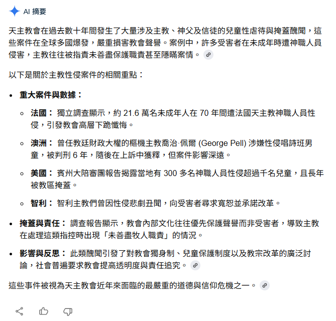
▲ 司法實證：全球教會性虐待與結構性掩蓋檔案
獨立調查數據證實：法國 70 年間約 21.6 萬名未成年人遭神職人員侵害、澳洲前教廷財政大權樞機主教佩爾涉性侵案、美國賓州逾 300 名神職人員侵害上千名兒童。這份血淋淋的司法調查證明，教會文化往往優先維護體制聲譽而非保護受害者，形成結構性庇護的道德崩壞。
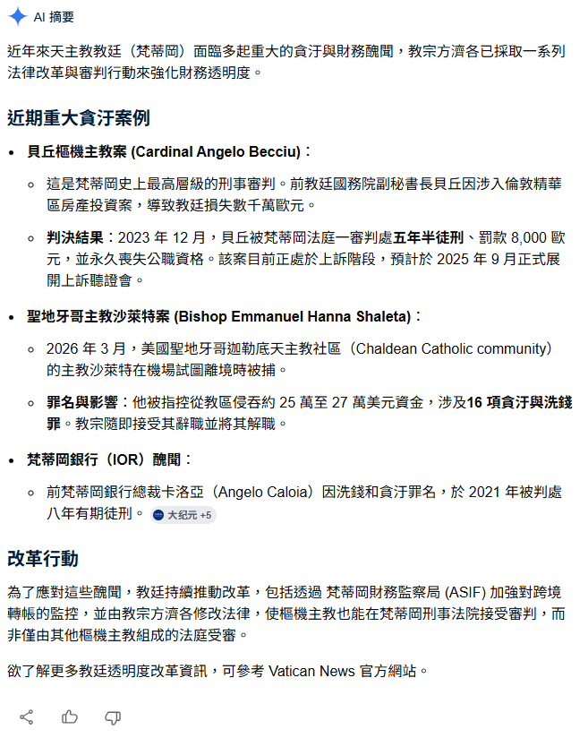
▲ 金流審計：梵蒂岡洗錢與高層主教貪腐醜聞
前教廷國務院副秘書長貝丘樞機主教涉入倫敦精華房產投資詐欺案，遭梵蒂岡法庭判處五年半徒刑；聖地牙哥沙萊特主教侵吞 25 萬美元教區公款於機場試圖離境時被捕。這證明神聖講台難掩世俗貪婪，宗教特權往往淪為跨國洗錢與貪瀆的犯罪溫床。
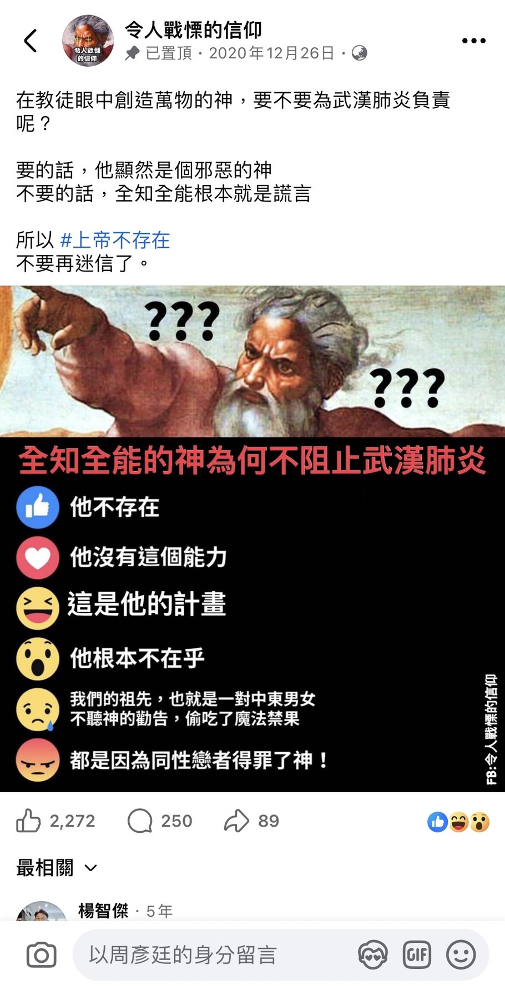
▲ 邏輯除錯：全知全能神面對大瘟疫的「完全失聯」
當新冠疫情奪走數百萬無辜生命時，神學陷入致命死角：若神創造萬物，病毒就是祂的惡意造物；若神無法阻止，則「全能」純屬謊言。信徒甚至荒謬地將天災甩鍋給「同性戀得罪神」或「神秘計畫」，赤裸暴露出迷信體制在面對自然規律時的卸責與無知。
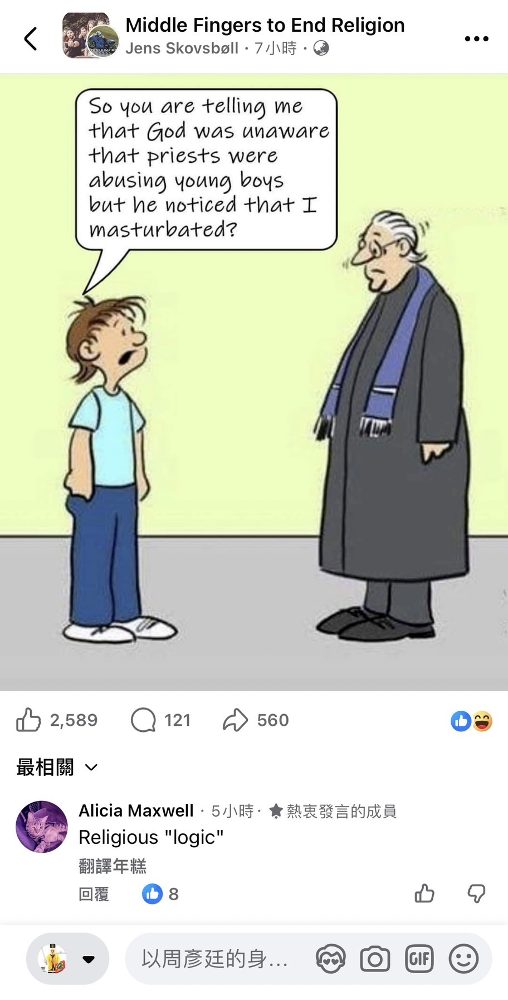
▲ 道德諷刺：雙標至極的神聖監控系統
漫畫藉由孩童的質問直擊宗教教條最諷刺的荒謬——信徒深信全能上帝能隨時監控並定罪普通凡人的生理慾望（如自慰），卻在成千上萬的神父長期對男童伸出魔爪時「集體眼瞎、永恆離線」。這種選擇性執法的荒誕，戳破了神聖道德監控的虛偽本質。
▲ 體制審判：緊盯同婚墮胎 vs 縱容神職人員性侵男童
教會高層一方面以「神不祝福罪惡」為由，動用龐大政治與輿論資源極力反對同性婚姻、墮胎與性教育；另一方面卻在內部長期包庇、轉移性虐兒童的神職人員。這張犀利諷刺圖精準質問：當體制將「不信教」視為大罪，卻縱容真實的性侵犯罪時，究竟誰才是真正的惡魔？
▲ 本土案例：台灣教會神學院大學生誘姦少女產女案
新聞揭發台北市極樂教會／浸信會光復堂團契過夜活動中，神學院男大學生藉由宗教團契權威誘姦國中少女致其懷孕產女，事後始亂終棄。證實宗教團契的封閉性與權力不對等，往往成為神職預備者對未成年人進行性誘姦與控制的隱蔽保護傘。
▲ 教育滲透批判：宗教組織以「守貞教育」阻礙科學性教育
批判保守宗教基金會（如信望愛基金會、得勝者協會）長年以志工名義滲透台灣各級校園推廣「守貞教育」，刻意排擠現代科學性平教育。當孩子因宗教恐嚇對生理與性完全無知時，反而更容易在校園與封閉團體內遭受侵害且不敢發聲求助。
下方三部精選影片直面宗教權威在現代法律與金錢維度下的殘酷實錄：從「攝理教四十年性侵犯罪鏈」、「洛杉磯總教區創紀錄的 8.8 億美元天價和解」，到「為何宗教是比詐騙更好賺的無本暴利產業」的經濟學審計：
▶ 實證片段一：神聖光環下的四十年魔爪——韓國攝理教鄭明析的洗腦性侵帝國
說明：記錄偽裝成基督教異端的攝理教教主鄭明析，如何利用末日恐嚇、靈性洗腦將自身包裝為彌賽亞，長達四十年跨國性侵、性虐無數年輕女信徒，赤裸體現群體迷信如何徹底閹割信徒的自主理性與防備意識。
▶ 實證片段二：8.8 億美元的天價代價——美國洛杉磯總教區性侵受害者世紀和解案
說明：美國天主教洛杉磯總教區為了解決數十年來涉及數百名神職人員性虐男童的龐大訴訟，最終付出創紀錄的 8.8 億美元賠償和解金。世俗司法的鐵證與金錢帳單，徹底戳破教廷口中「個別害群之馬」的卸責謊言，證實這是一場制度化包庇與洗白的集體犯罪。
▶ 實證片段三：比詐騙還要好賺的無本生意——從符號經濟學看宗教的斂財密碼
說明：以犀利幽默的商業視角解構宗教組織的運作本質——既不必承擔售後服務，產品（天堂與免罪保證）亦全部交割在虛無飄渺的死後世界；免稅、免查帳且附帶強大的心理恐嚇機制，堪稱人類歷史上最暴利、最不受世俗監管的「信仰特許經營權」。
四、 因果法統破產：以暴君神格之名，何以威懾深淵惡靈？
驅魔儀式的一大支柱是「依仗至高純潔神明的權柄」。然而，若翻開原版猶太-基督教典籍《舊約》，耶和華展現出的性格完全是一尊青銅至鐵器時代、充斥著嫉妒與狂暴特徵的近東部族戰神：
- 歷史黑料的法統瓦解：耶和華在經典中動輒降下大洪水清洗全人類、焚毀所多瑪、降下十災殘殺埃及無辜長子，甚至直接對約書亞與掃羅下達滅絕令，要求將迦南各城「不分男女老幼、連帶牲畜全部殺絕」。
- 惡魔視角的邏輯反殺：若附身的魔鬼真具備高度智慧，當神職人員高呼「奉至聖耶和華之名命你退下」時，魔鬼只需調閱其神學歷史記錄反問一句：「你所侍奉的主，在歷史上屠殺無辜嬰孩的數量遠勝於世上一切惡魔；一個本身充斥著種族滅絕行徑的嗜血暴君，有何道德法統與因果正當性來審判我的黑暗？」 整套審判邏輯在歷史文本面前瞬間土崩瓦解。
下方兩部影片節錄自「天狗衛視」對神學源頭的顛覆性考據，精闢剖析了宗教經典中「人造部族神」如何被強行偷換為「宇宙真理之神」，以及原始文本中赤裸的暴虐殺伐。兩段影像均由本站作者親自透過 InShot 聽翻並加註雙語／英文字幕，並經由多軌混音技術，配搭了多首深沉與昂揚並進的鋼琴樂章：
▶ 實證片段一：概念偷換的崩潰——「人造宗教之神」vs「宇宙物理實相」
說明：影片透徹解析了人類宗教如何將一個具備喜怒哀樂、嫉妒嗜殺的區域性部族人格神，強行拔高成宇宙萬物的造物主；當我們真正理解浩瀚宇宙的客觀物理法則時，宗教偶像的狹隘本質便無所遁形。
🎹 多軌配樂註解：背景音樂由本站作者本人親自鋼琴獨奏實錄兩首經典曲目拼接而成——前半段為細膩溫潤的《Shiawase Shaking Hands》，後半段轉折銜接由作者親自改編演繹之《戰鬥-通往勝利》（G大調抒情版），以內斂深沉的琴音張力，具象化從情感溫存走向理性覺醒的思想交鋒。
▶ 實證片段二：文本法統的清算——《舊約》文本裡被刻意忽視的暴君行徑
說明：直面猶太原始典籍中耶和華動輒滅城、屠殺長子、下達無差別滅絕令的殘酷真相，徹底戳破「神愛世人」的後天濾鏡，證明這套神學體系在道德倫理上早已法統破產。
🎵 三段式音軌後製註解：此片段配樂由作者以 InShot 進行三段式音軌融合——首段選用鋼琴創作者 Kuroto2000 演奏之《Shiawase Shaking Hands》精華原聲，中後段無縫銜接由本站作者親自鋼琴實錄演奏的《光的戰役》與《ウルトラの奇跡》，藉由史詩般的英雄意志旋律，直球對抗神權長夜。
五、 跨系統失效與局部神格（Data Type 衝突）：物理規律的普世性 vs 宗教法術的地域性
從地理空間與系統工程學的角度來看，所謂的「驅魔神聖代碼」存在著致命的封閉邊界限制：
-
黎凡特走廊的局部投影：號稱統領數百億光年浩瀚宇宙的主宰，在過去數千年間其神蹟與預言竟然嚴格被物理鎖死在長寬僅幾百公里的地中海東岸黎凡特（Levant）荒漠走廊。在同一時空維度下，東亞繁華的華夏諸國、美洲的瑪雅印加文明、南亞的孔雀王朝，其億萬生靈在整整數千年中完全處於「神的網絡信號覆蓋範圍之外」。一個具有嚴重地理盲區的本地部族神，怎麼可能代表普世宇宙的終極秩序？
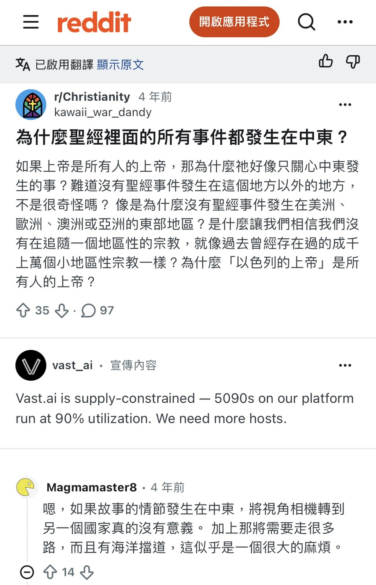
▲ 地理盲區審計：為什麼聖經事件全鎖死在中東？
Reddit 基督徒社群的真實熱議一語道破真相：若上帝真是全人類唯一的造物主，為何其神蹟與介入只局限於中東一隅，而對美洲、澳洲與東亞的廣袤大陸徹底失聯？古人受限於地緣交通，無法想像大洋彼岸的文明，因此他們編造的神也只能在巴勒斯坦與埃及的沙漠走廊裡活動，赤裸暴露了神明的人造地域屬性。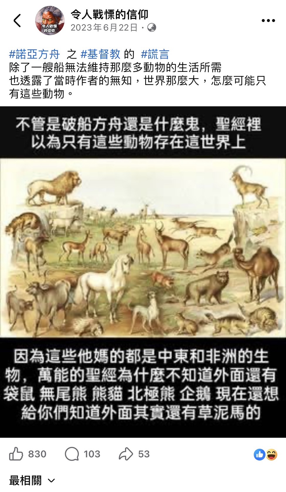
▲ 生物演化審計：諾亞方舟上「不存在」的全球物種
原始神話宣稱方舟裝載了全天下的動物，但文本記載的全是中東與北非的常見物種（獅子、駱駝、綿羊、馬匹）。那位「全知」的神在寫作經典時，竟然完全不知道地球上還有袋鼠、無尾熊、大貓熊、企鵝與北極熊的存在！這種嚴重的生物學盲區，鐵證了方舟故事純粹是青銅時代近東游牧民受限於認知邊界的區域性編造。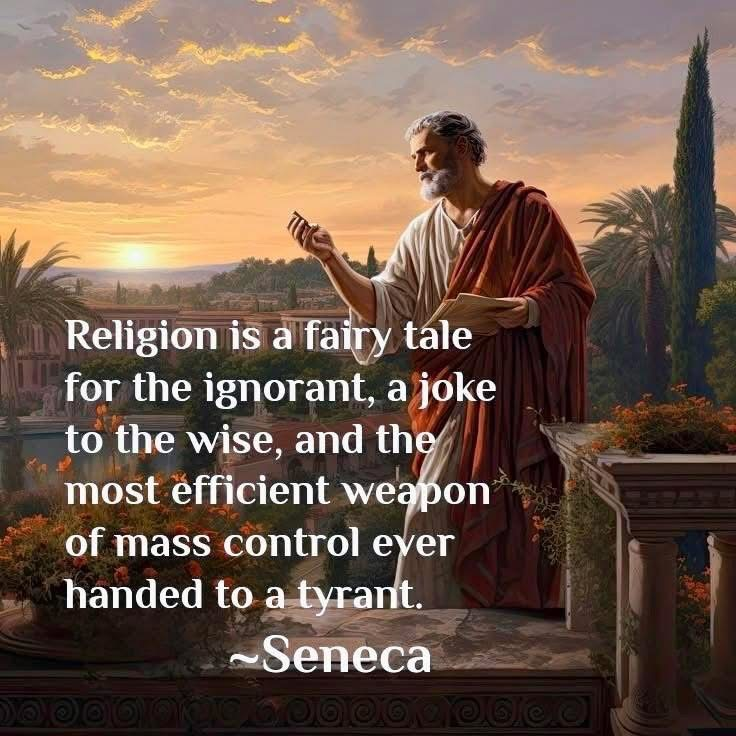
▲ 哲學本質降維：塞內卡（Seneca）的千年洞見
古羅馬哲學家塞內卡精闢指出：「宗教在愚者眼中是真理，在智者眼中是笑話，在統治者眼中則是最高效的群體控制武器。」這段跨越兩千年的名言，直接撕碎了一切神權統治與驅魔把戲的遮羞布。 -
Data Type 衝突與代碼死當（港產靈幻與歐美恐怖影視的荒謬隱喻）：
在影視敘事中，當不同文化體系的驅魔術式發生跨界碰撞時，往往會爆發災難性的系統崩潰：
- 林正英《驅魔道長》的型別崩潰：當西洋吸血鬼被林正英的茅山道術逼到絕境、突然無縫切換為東方跳殭模式時，西方神父高舉的十字架與聖水立刻徹底失去攻擊抗性；而當吸血鬼切換回西方飛行模式時，茅山道士的桃木劍與黃紙符咒亦當場無效。
- 《靈異入侵／恰吉》（Chucky）的神權反殺：在《鬼娃恰吉》影視系列中，神父手持十字架、口誦天主教拉丁文驅魔經文企圖感化或驅除惡靈，結果卻被體內寄存著「海地巫毒教（Voodoo）咒語」的殺人狂恰吉殘忍嘲笑與物理反殺。天主教的最高代碼在巫毒魔法面前完全無法解析，神職人員在面對被塑膠與鋼鐵包裹的物理刺殺時，那位全能的神再度選擇了徹底離線。
真理的唯一標準是「全域普適（Universality）」。真正的宇宙物理客觀規律——例如萬有引力常數 $G$、真空光速 $c$、熱力學第二定律——不論把實驗儀器搬到梵蒂岡、埃及金字塔、武當山還是半人馬座α星，其物理量永恆不變，絕不會因為物質貼上了「東方」或「西方」的文化標籤就發生偏移。
反觀驅魔儀式：天主教的聖水治不了東方狐狸精與海地巫毒娃娃，茅山天師的黃紙黑墨鎮不住歐美吸血鬼，伊斯蘭的阿亞特經文對印度阿修羅完全失效。一旦切換文化環境就拋出型別衝突例外（Type Mismatch Exception）的現象，無可辯駁地證明了：世上根本不存在任何客觀的超自然神力，驅魔本質上只是不同地理板塊的人類大腦，在封閉語言環境中對自身編造的幻象所進行的一場同溫層自嗨。
▶ 影視隱喻一：林正英《驅魔道長》——土洋道法碰撞下的 Data Type 衝突死當
說明：當西洋殭屍在東方跳殭與西方飛行魔王之間切換時，中西兩派神聖法術瞬間失去抗性，荒誕喜劇精準戳穿了宗教法術完全不具備普世物理規律的虛構本質。
▶ 影視隱喻二：《靈異入侵／恰吉》（Chucky）——巫毒黑魔法對天主教神聖代碼的殘酷反殺
說明：神父手持十字架、高誦拉丁文驅魔經文企圖退治附身於玩偶的查爾斯·李·雷，卻被依憑海地巫毒咒語的恰吉當場嘲笑並以物理利刃反殺。天主教代碼在異文化法術與實體鋼刀面前全面失效，神聖護佑再次陷入絕對離線。
六、 當代個體觀察：跨文化視野下的「去神聖化」日常實踐
超自然教條與神聖禁令往往被祭司集團包裝為「不可違逆的天條與因果詛咒」。然而，這些看似不可撼動的精神枷鎖，一旦置於冷靜的理性觀察與現代世俗生活維度下，便會瞬間不攻自破。
下方對話截圖記錄了筆者與一位長居埃及友人的真實交流片段：即便身處傳統宗教氛圍極為濃厚、教條高度滲透社會的地理板塊，一個具備獨立思考能力的理性個體，依舊能自主破除飲食禁忌（如食豬肉、飲酒）與繁文縟節的道德束縛；筆者亦分享了過去在校園面對教會傳教時，如何以冷靜幽默的理性視角解構群體催眠儀式。
這場跨越歐亞非文化圈的真實交流，從日常生活層面清晰印證了一項客觀實相：所謂的神聖禁忌，本質上只是特定時空、特定部落為了社會維穩所編寫出來的文化構想；一旦人類大腦啟動理性審查，一切附魅在禁令之上的超自然威壓與虛構恐懼，便會在現實陽光下徹底蒸發。
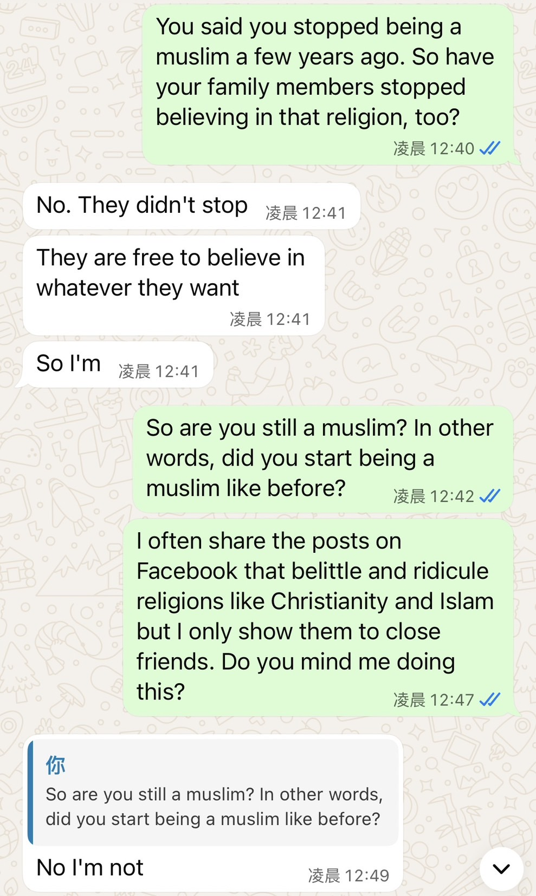
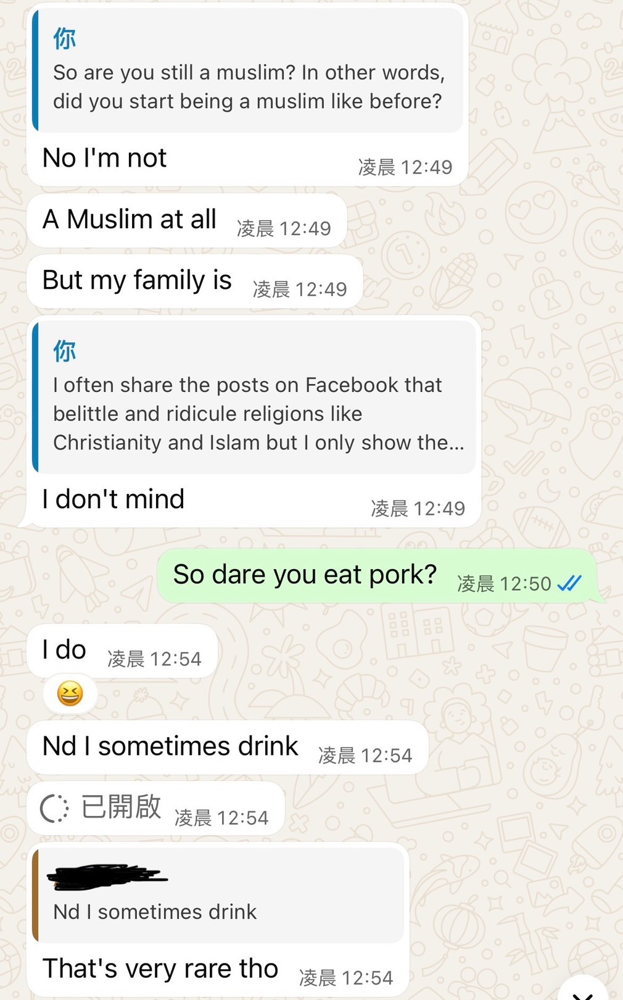
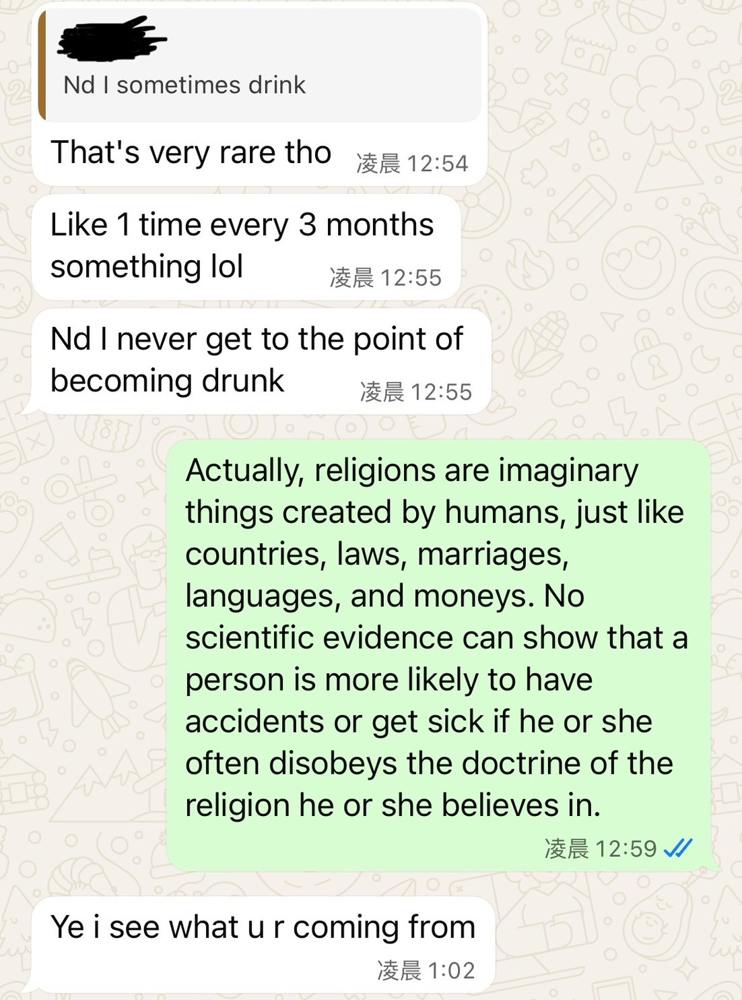
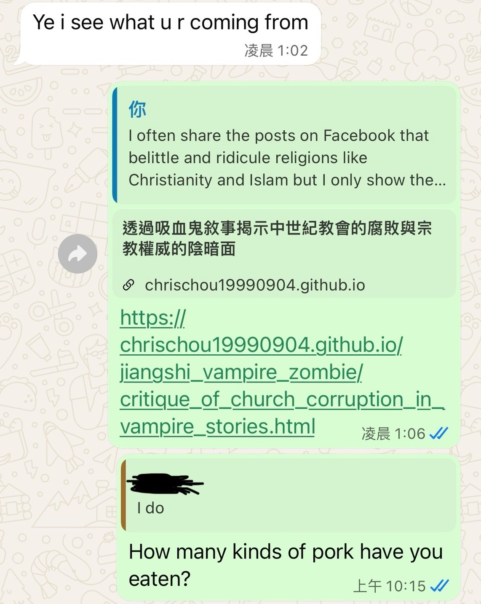
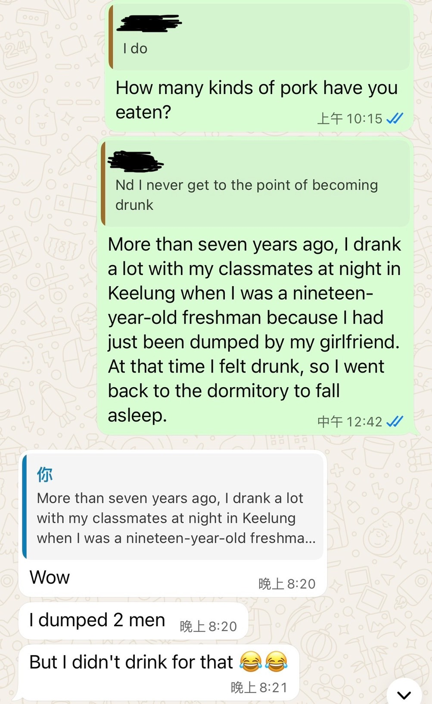
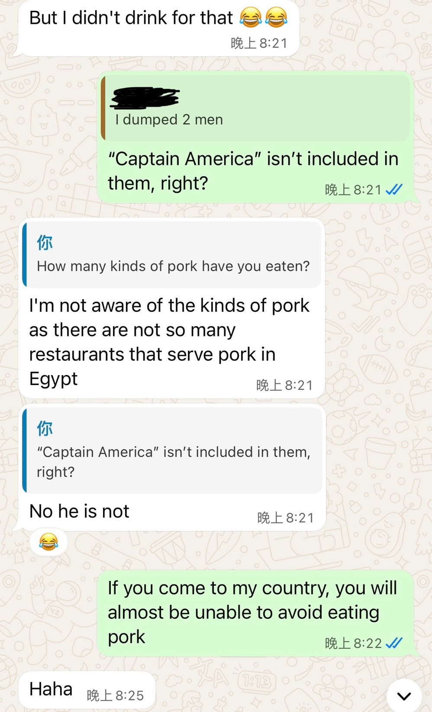
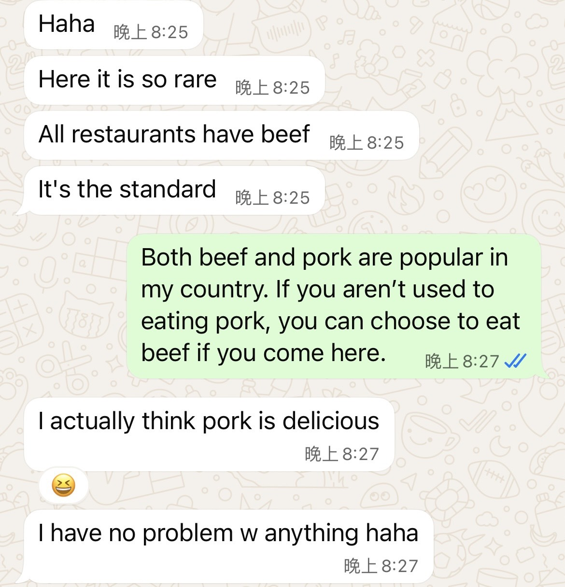
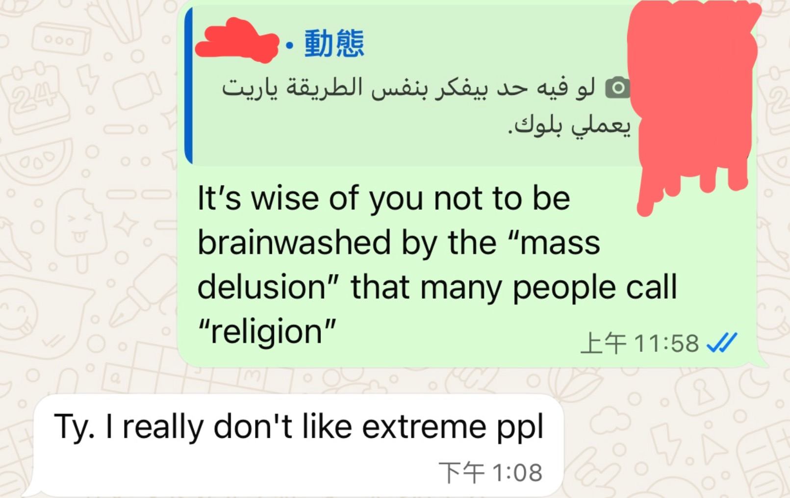
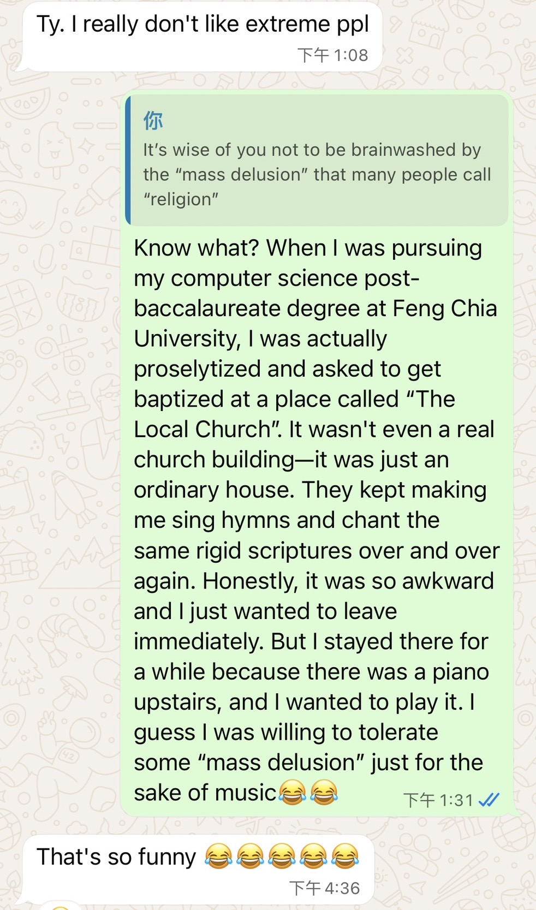
結語：從「神聖之光」到「理性之光」
所謂的「聖光」不應是燃燒異類的烈火，而應是指引理解的微光。如果這道光必須建立在盲目的審判、對科學的排斥以及對弱者的屠殺之上，那麼它便不具備任何神聖性。
我們不應只將中世紀的獵巫與審判視為荒唐的往事，而應當警惕：當代是否依然有人用「絕對正義」的名義，去排斥與自己邏輯不同的人？正如德古拉對偽善者的反擊，或是 Roger Bacon 對真理的堅持，我們真正需要的不是一個「沈默且殘暴的神」，而是一個能容納理性、觀察與慈悲的人間世界。
為了給全篇的思辨畫上最堅實的句點，文末特別彙整了兩大思想體系的深度對照影音：前半部分透過「天狗衛視」的文化與科學史考據，向讀者展現實證科學如何打破神權壟斷；後半部分則藉由「蒟蒻講幹話」接地氣的生活邏輯，將神義論、狂熱心態與教條幻覺徹底剝離，引導大腦真正走出蒙昧牢籠：
下方兩部總結影片節錄自知名思想文化頻道「天狗衛視」的經典文化批判，全方位拆解了宗教如何製造恐懼、封閉思維，以及現代實證科學如何用可重複驗證的客觀規律粉碎神棍幻覺。兩部影片皆由本站作者親自透過 InShot 完成精確的雙語／英文字幕後製，並配搭精心挑選與錄製的專屬配樂：
▶ 實證片段一：真理的降維打擊——客觀規律如何徹底「玩爆」宗教神威
說明：影片深度探討科學革命如何藉由可驗證的實驗與觀測，逐步擊潰教會數百年來壟斷的宇宙解釋權。
🎹 音樂後製註解：背景配樂為本站作者本人親自鋼琴獨奏實錄之經典旋律《一眉道人》。藉由東方靈幻道法的肅穆琴聲，呼應人類理性直面未知時的堅定意志。
▶ 實證片段二：撥開神聖迷霧——從底層認知解碼「迷信」的本質與心理牢籠
說明：一針見血地界定什麼是「迷信」——凡是拒絕接受質疑、禁止邏輯推敲、靠恐嚇維持的教條皆屬此類，為全篇「反思宗教偏執與道德除錯」畫下最清晰的句點。
🎵 音樂後製註解：背景配樂特地從 Bilibili 平台精選並擷取磅礡恢弘的史詩樂曲《帝皇再臨》的鋼琴版，透過 InShot 音軌疊加技術混音而成，以王者覺醒般的宏大氣勢象徵理性之光衝破蒙昧黑夜。
在完成了歷史與哲學的溯源後，下方四部精選影片同樣出自「蒟蒻講幹話」。蒟蒻以大眾最熟悉的世俗現實與生活邏輯為刀，層層剖開「科學 vs 神學」的不可調和性、「狂熱者思維漏洞」、「天堂敘事反人性本質」，以及「一神教與極權體制的同構性」，完成全篇最痛快淋漓的邏輯除錯：
▶ 實證片段三：科學與神學的本質差別——面對錯誤時的態度（蒟蒻講幹話）
說明：精闢剖析科學與宗教的根本分水嶺——科學是「根據客觀證據修正理論」，承認自身無知並不懼推翻舊知；而神學則是「先假定結論絕對正確，再強行扭曲客觀事實去迎合教條」。這種思維底層的差異，決定了文明究竟是走向探索進步還是退回封閉蒙昧。
▶ 實證片段四：宗教狂熱分子與一般人的差別——被教條閹割的同理心（蒟蒻講幹話）
說明：直面狂熱信徒的心理機制——普通人看重人性的善良、共情與具體苦難，而狂熱分子眼中只剩下死板的規條與派系認同。當教條高於人性時，狂熱者甚至能帶著慈悲的笑容將異見者推向火坑，呼應前文「以神之名行惡」的心理異化。
▶ 實證片段五：假如真的有天堂和地獄？——現實邏輯下「天堂」比地獄更恐怖反常理（蒟蒻講幹話）
說明：以極度爆笑且嚴密的現實邏輯，徹底解構傳統宗教所描繪的「極樂天堂」。蒟蒻指出：如果天堂只有永恆無聊的下跪讚美神、失去所有人類的慾望、喜怒哀樂與個人意識，那所謂的天堂本質上就是一場無休止的精神 lobotomy（腦白質切除術），在現實常理看來，其恐怖與壓抑程度甚至遠勝地獄！
▶ 實證片段六：共產黨和基督教為什麼那麼像？——極權意識形態與一神教的同構基因（蒟蒻講幹話）
說明：從社會學與政治哲學維度展開大膽對比，剖析一神宗教體系與近代極權政黨在「唯一真理壟斷」、「領袖造神崇拜」、「原罪與思想清洗」、「異端獵殺」、「許諾虛幻烏托邦未來」等組織架構上的驚人一致性，精準揭穿宗教組織實質就是古代版本的高度集權政治機器。